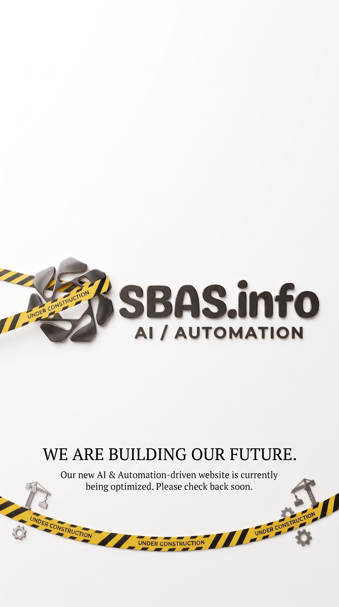

SBAS.info - We are building our future.
Our new AI & Automation-driven website is currently being optimized. Please check back soon.

Our new AI & Automation-driven website is currently being optimized. Please check back soon.
